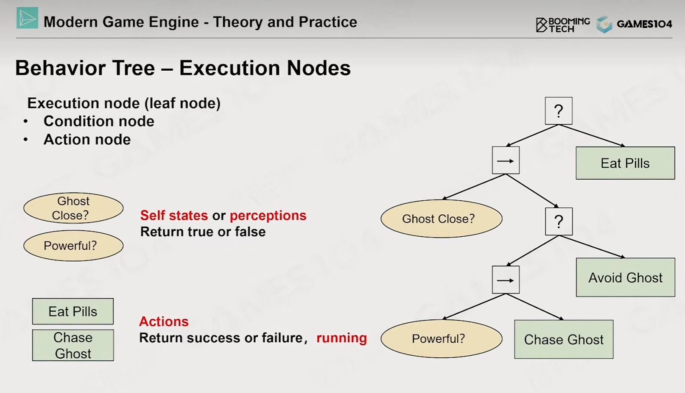
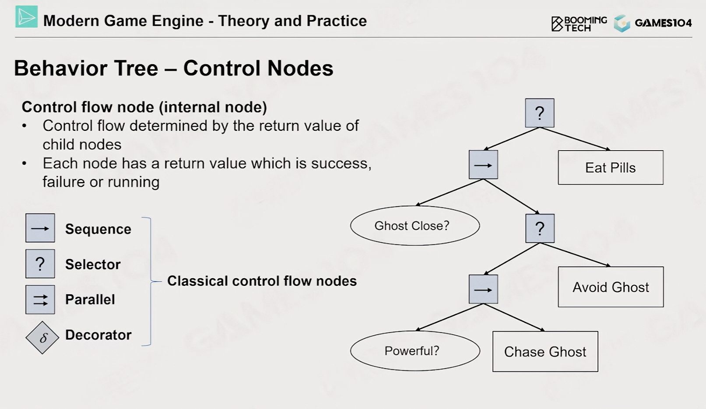
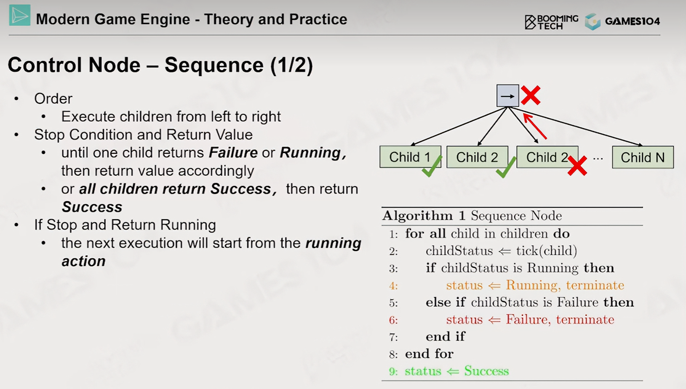
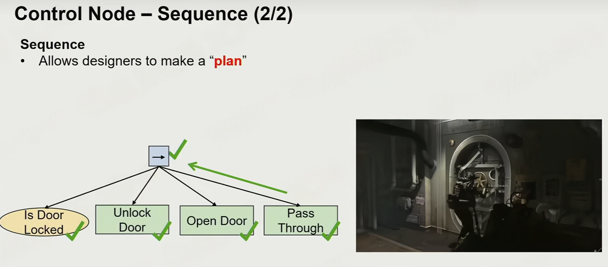
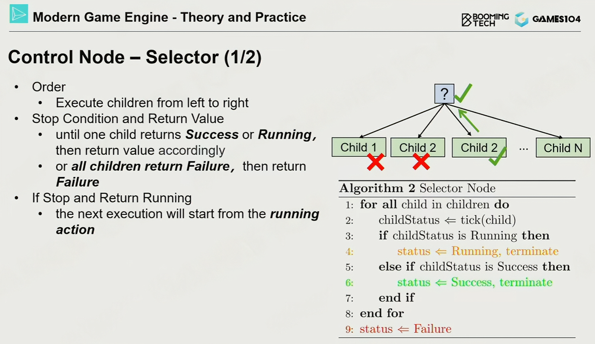
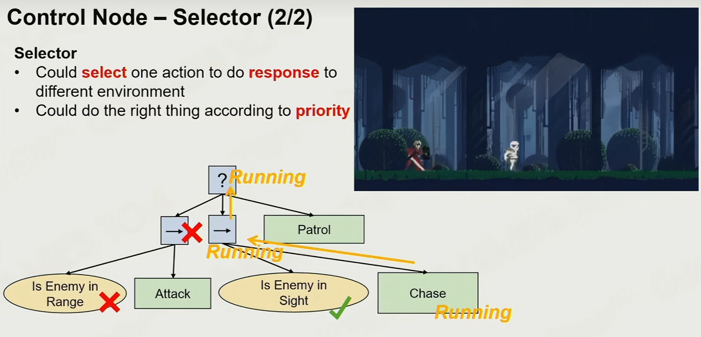
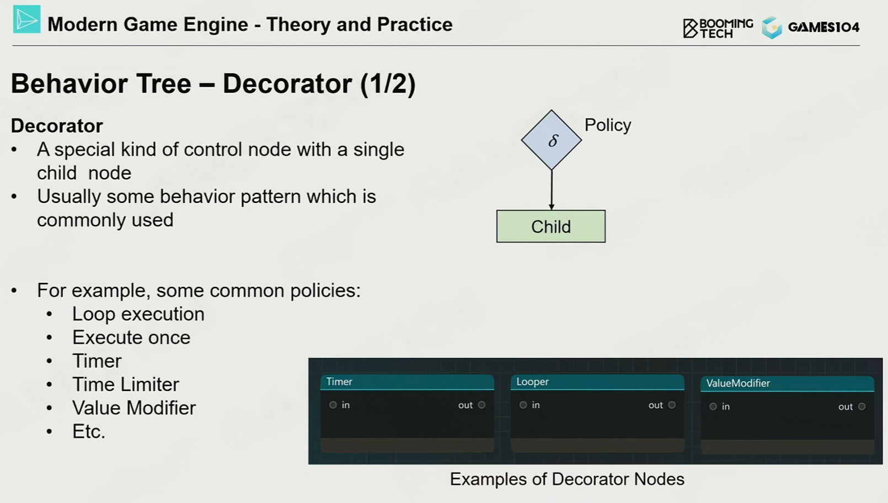

本文介绍游戏引擎的常见知识点和高频考点
游戏物理：碰撞检测系统详解
碰撞检测（Collision Detection, CD）是游戏物理引擎的核心模块。它不仅服务于物理模拟，还广泛应用于游戏逻辑判定。在实际的游戏开发与面试中，除了基础的相交测试，如何高效地筛选潜在碰撞对（Broad Phase）以及处理高速物体的穿透问题（CCD）往往是更受关注的深层考点。
碰撞检测系统的主要职能涵盖三个维度：判断对象之间是否发生接触，这通常用于触发各类游戏事件，如踩中陷阱或捡起道具；
防止物理穿透，在渲染和物理模拟时检测并修正物体之间的非法重叠；
检测静态支撑，即判断物体是否稳定地支撑在其他物体上（如放置在地面），这对于物理引擎的休眠策略至关重要。
为了平衡精度与性能，成熟的物理引擎通常采用两阶段架构，这也是面试中关于性能优化的常见话题：
宽阶段 (Broad Phase)
这是碰撞检测的第一道防线。由于对场景中所有物体两两进行精确检测的开销是巨大的（$O(N^2)$），宽阶段通过使用低成本的包围体（如AABB）或空间划分结构（BVH, Octree, Quadtree）快速筛选，排除掉绝大部分明显不可能相交的物体对，生成潜在碰撞列表。
窄阶段 (Narrow Phase)
对宽阶段筛选出的候选对进行精确的几何相交测试。在此阶段，系统不仅需要判断是否相交，往往还需要计算具体的碰撞流形 (Collision Manifold)，包含相交点、接触法线以及穿透深度等信息，以便后续进行物理求解。
可碰撞对象的表示
为了优化内存和计算，物理引擎普遍采用形状 (Shape) 与变换 (Transform) 分离的设计模式。
在一个游戏世界中，可能存在大量的相同对象实例（例如成百上千个相同的箱子）。它们共享同一个几何形状数据（Mesh或Hull），但拥有不同的世界变换矩阵（位置、旋转、缩放）。将形状与变换分开表示，不仅能显著降低内存占用，还能优化计算成本：在检测时，我们通常将测试射线或形状变换到对象的局部空间进行计算，避免了每帧对所有顶点进行世界坐标变换。
碰撞图元详解
图元是碰撞检测的基本几何单位，选择合适的图元对性能至关重要。
基础图元
- 球体 (Sphere)：最简单的图元，检测仅需计算圆心距离平方。常用于在大规模单位（如RTS游戏）中进行快速近似检测。
- 胶囊体 (Capsule)：由一个圆柱体和两端的半球组成。这是角色控制器 (Character Controller) 的标准标配。在面试中常被问及为何不用圆柱体或长方体，原因在于胶囊体底部是圆滑的，在通过斜坡、台阶或不平整地面时能平滑滑动，避免了棱角导致的“卡脚”现象。
- 轴对齐包围盒 (AABB)：面的法线始终平行于世界坐标轴的立方体。其构造简单（只需存储最小点和最大点），适合做宽阶段筛选。但其缺点在于当物体旋转时，AABB必须重新计算并变大，导致包裹性变差，即空白区域较多。
- 有向包围盒 (OBB)：随物体旋转的立方体。它的包裹性比AABB好，但相交测试的计算复杂度更高。
复杂图元
- 离散定向多面体 (k-DOP)：AABB的变体，通过增加斜向平面（如削去角的立方体）来更紧密地包裹物体。
- 任意凸体积 (Convex Hull)：任意凸多面体，是刚体物理中最常用的精确形状。
- 多边形集合 (Triangle Mesh)：通常仅用于静态场景（如地形、复杂的墙壁）。由于计算开销极大且通常没有内部体积概念，动态物体应尽量避免使用Mesh Collision。
- 复合形状 (Compound Shapes)：通过层级结构组合多个基础图元来近似复杂物体，例如一辆车可以由一个OBB车身和四个圆柱轮胎组成，这是平衡性能与精度的常用手段。
碰撞测试方法
当两个图元进入窄阶段时，需要具体的算法来判定是否相交。
基于几何特征的测试
对于简单图元，直接利用几何性质。例如球体测试只需判断球心距离平方与半径和平方的关系；AABB测试则是检查物体在三个坐标轴上的投影区间是否都发生了重叠，只要有一个轴不重叠则一定不相交。
分离轴定理 (Separating Axis Theorem, SAT)
这是检测两个凸多面体（如OBB、三角形）是否相交的通用算法。其核心思想是：如果能找到一条轴，使得两个物体在该轴上的投影不重叠，则这两个物体分离。
检测轴通常选择物体A的面法线、物体B的面法线，以及A的边与B的边的叉积。如果检查了所有可能的轴都重叠，则判定物体相交。
GJK 算法 (Gilbert-Johnson-Keerthi)
GJK 是现代物理引擎（如Bullet, PhysX）中检测凸体碰撞的核心算法，也是面试中的高难度考点。
它基于闵可夫斯基差 (Minkowski Difference) 的概念。对于两个形状 $A$ 和 $B$，它们的闵可夫斯基差定义为：
$$ A \ominus B = \{ a - b \mid a \in A, b \in B \} $$其几何意义在于：如果形状 $A$ 和 $B$ 相交，则它们的闵可夫斯基差 $A \ominus B$ 必定包含原点 $(0,0,0)$。
GJK 算法巧妙地利用支撑函数 (Support Function) 在单纯形 (Simplex) 中迭代搜索原点，避免了显式构建复杂的差集形状。如果需要进一步获取穿透深度和接触点，通常会配合 EPA (Expanding Polytope Algorithm) 算法使用。
运动物体碰撞测试
在处理高速运动的物体时，传统的离散碰撞检测 (Discrete CD) 可能会失效。
隧道效应 (Tunneling Effect)
这是面试中关于物理稳定性的经典问题。当物体速度极快（如子弹），在一帧的时间间隔内，它的位移可能非常大，导致它直接从位置 A 跳到了位置 B，完全越过了一堵墙，而没有在中间位置触发碰撞检测。
解决方案
为了解决隧道效应，我们需要引入连续碰撞检测 (Continuous Collision Detection, CCD)：
- 扫掠形状 (Swept Shapes / Casts)：我们不只检测当前帧的位置，而是检测物体从上一帧位置到当前帧位置所形成的“扫掠体积”。例如，一个移动的球体扫掠后会形成一个胶囊体形状，我们检测这个扫掠体积是否与其他物体相交。
- 撞击时间计算 (Time of Impact, TOI)：对于射线检测 (Raycasting) 或更复杂的CCD算法，目标是求解物体撞击发生的精确时间 $t$ ($0 \le t \le 1$)：
一旦求出 $t$，物理引擎就可以将物体回退到撞击发生的时刻进行处理，从而彻底杜绝穿透现象。
物体遍历加速算法
在游戏中，为了加速物体碰撞或者射线检测的查询，尽可能早地排除不可能相交的对象，通常会使用各种物体遍历加速算法，先进行粗略判断，再进入精确计算。
从工程实践来看，常见的加速方法大致可以分为空间划分结构和层次包围结构两类。
第一类是基于空间划分的结构，例如 Uniform Grid、Octree 和 KD-Tree。 这类方法的特点是先把空间划分好，再把物体放进对应的空间单元中。
以 Octree 为例，它会递归地将三维空间划分为八个子区域，每个节点代表一个空间体积。物体根据自身的位置被插入到对应的子节点中。 在进行碰撞检测或射线查询时，只需要沿着射线方向或查询体所在的空间，遍历可能相关的节点，而不是全场景搜索，从而大幅减少候选对象数量。
这种结构的优势是空间定位直观、查询路径清晰，但在动态场景中，如果物体频繁移动，会导致插入、删除和节点调整成本较高，因此更适合相对静态的场景，例如地形、体素世界或大规模静态物件。
第二类是基于层次包围的结构，其中最典型的是 BVH（Bounding Volume Hierarchy）。 BVH 的核心思想不是划分空间，而是按物体本身进行层次组织。
在构建 BVH 时，系统会将一组物体或三角形递归地划分成若干子集合，并为每个集合计算一个包围体（通常是 AABB）。父节点的包围体完整地包住所有子节点。这样就形成了一棵树，叶子节点对应具体的物体或几何体。
在进行碰撞检测或射线查询时，查询过程从根节点开始： 如果射线或碰撞体与当前节点的包围盒不相交，那么整个子树都可以直接跳过； 只有当包围盒相交时，才继续向下遍历子节点，直到最终落到叶子节点进行精确检测。
通过这种层次化剪枝，绝大多数不相关的对象都会在高层被排除，因此实际查询复杂度通常接近对数级。 由于 BVH 是以物体为中心组织的，对物体位置变化的适应性较好，所以在游戏引擎、物理系统和射线追踪中被广泛使用。
射线检测算法
在游戏客户端开发中，射线检测（Raycasting 或 Ray Tracing）是一项极其基础且核心的几何物理运算，广泛应用于枪械弹道计算、角色视线遮挡判定、鼠标拾取以及各种技能的逻辑判定。从数学定义的角度来看，一条射线由一个起始点 $O$ 和一个标准化的方向向量 $D$ 构成。射线的参数方程可以表达为如下形式，其中 $t$ 代表沿着射线方向延伸的距离标量。
$$P(t) = O + t \cdot D$$射线检测算法的最终目的，就是找出能够同时满足射线方程与空间中几何体表面方程的最靠近起点的正数 $t$ 值。然而，在一个真实且复杂的游戏场景中，如果让射线直接与场景中成千上万个模型的所有网格面进行逐一求交运算，将产生灾难性的性能开销。因此，现代物理引擎均采用宽相（Broad Phase）和窄相（Narrow Phase）相结合的两步走优化策略。
在宽相阶段，物理引擎会依赖空间划分数据结构，最常见的是层次包围盒（BVH）或八叉树 。系统会将复杂的物体包裹在简单的几何体中，例如轴对齐包围盒（AABB）。射线会首先与这棵树进行遍历测试，通过 Slab 算法快速剔除掉绝大部分根本不可能发生相交的节点 。一旦射线未击中某个父节点的包围盒，该节点下属的所有复杂模型都将被直接忽略，从而将计算量从全局级别迅速降维到局部少数几个物体上。
当宽相阶段筛选出潜在的碰撞目标后，算法进入窄相阶段，此时需要进行精确的射线与三角形相交测试。工业界实现窄相检测的绝对标准是 Möller-Trumbore 算法。该算法的精妙之处在于它不需要预先计算三角形所在的平面方程，而是巧妙地利用克莱姆法则（Cramer’s rule）构建了一个线性方程组，能够同时解出碰撞点距离 $t$ 以及重心坐标 $u$ 和 $v$。
$$\begin{bmatrix} t \\ u \\ v \end{bmatrix} = \frac{1}{(D \times E_1) \cdot E_2} \begin{bmatrix} (T \times E_1) \cdot E_2 \\ (D \times E_2) \cdot T \\ (T \times E_1) \cdot D \end{bmatrix}$$在这个计算矩阵中，$E_1$ 和 $E_2$ 分别代表三角形共享同一个顶点的两条边向量，而 $T$ 则是从该共享顶点指向射线原点的向量。只要方程组求解出的 $u$ 和 $v$ 均大于或等于零，且 $u + v$ 的结果小于或等于一，就可以从数学上严格判定射线成功击穿了该三角形表面。
除了纯粹的几何数学运算，一个完善的引擎级射线检测实现还必须包含碰撞过滤机制（Collision Filtering）。在遍历检测的过程中，系统并不是盲目地计算所有几何体。通过设置碰撞通道（Trace Channels）和碰撞响应配置，射线可以携带特定的身份标识进行查询。如果物理场景中某个物体的位掩码（Bitmask）设定为忽略该射线的查询通道，底层的物理管线就会在进行昂贵的数学计算前直接跳过该物体。这种几何空间剔除与逻辑状态过滤的双重保障，确保了高频次的射线检测逻辑能够在单帧的毫秒级预算内稳定运行。
行为树
行为树（Behavior Tree）是一种用于构建复杂人工智能逻辑的层次化数学模型，在现代游戏开发中被广泛用作非玩家角色（NPC）的大脑 。它的基本结构是一棵有向树，每次执行时从根节点（Root）开始，按照特定的逻辑自顶向下、从左到右遍历各个节点。行为树的核心概念在于每个节点在执行后都会向其父节点返回一个明确的状态值，通常是成功（Success）、失败（Failure）或正在运行（Running）。

一颗行为树的叶子结点包含两种：
1. 判断状态的节点，返回 true or false；
2. 动作节点，返回 Success, Failure, Running三种状态

非叶子节点称作控制节点，通常包含四种：
-
Sequence节点，从左向右依次执行各个节点或者子树，只有所有节点均为Success的情况下才会返回Success，适合执行一连串动作


-
Selector节点，从左向右依次尝试子节点或者子树，只有全部失败的情况下才会返回Failure，适合在不同情形下执行不同动作


-
Parallel节点用于并行执行多件任务
-
Decorator节点一般只有一个子树/子节点，用来替代一些常用的操作，比如等到一段时间，定时执行等

动画与动画状态机
动画状态机（Animation State Machine）定义
动画状态机是一种用于管理和控制角色动画播放逻辑的计算模型。它将角色的每一种动画表现（如待机、行走、跳跃、攻击）抽象为一个"状态"，通过定义状态之间的"转换条件"来驱动动画的切换。它是有限状态机（FSM）在动画系统中的具体应用。
核心组成要素
- 状态（State）： 代表角色当前正在播放的一段动画或一组混合动画。每个状态内部通常关联一个 Animation Sequence 或 Blend Space。状态拥有进入（Enter）、执行（Update）、退出（Exit）三个生命周期回调。
- 转换（Transition）： 定义从一个状态切换到另一个状态的路径。转换包含触发条件（基于参数判断）、过渡时长（Blend Duration）、过渡曲线等属性。转换可以设置是否允许中断（Interruption）。
- 参数（Parameter）： 状态机对外暴露的变量，用于驱动转换条件的判断。常见类型包括 Float、Int、Bool、Trigger。Trigger 与 Bool 的区别在于 Trigger 在被消费后会自动重置为 false。
- 层（Layer）： 允许多个状态机同时运行并叠加结果。典型用途是上下半身分离动画，例如上半身播放射击动画、下半身播放跑步动画。每个层可以设置混合模式（Override 或 Additive）和权重。
混合空间（Blend Space）
混合空间是状态机中一种特殊的资产，它不是播放单一动画，而是根据一个或多个参数在多段动画之间进行加权混合。典型应用是移动系统：用一个 Speed 参数在 Idle、Walk、Run 之间平滑过渡。混合空间分为 Blend Space 1D（单轴）和 Blend Space（双轴，如方向+速度）两种类型。双轴混合常用于八方向移动。
动画过渡（Transition / CrossFade）
动画过渡是指两个动画片段之间的平滑衔接过程。过渡时长决定了两个动画的混合区间，过短会产生突兀跳变，过长则显得拖沓。在过渡期间，两段动画同时采样并按权重混合骨骼的 Transform 数据。引擎通常使用线性插值（Lerp）或球面线性插值（Slerp）来完成旋转的混合。
子状态机（Sub-State Machine）
子状态机允许将一组相关状态封装为一个逻辑单元，以降低状态图的复杂度。例如将"地面移动"相关的所有状态（Idle、Walk、Run、Sprint）收入一个子状态机中，主层级只需关心"地面"、“空中”、“游泳"等大状态之间的转换。
动画通知（Anim Notify / Anim Notify State）
动画通知是嵌入在 Animation Sequence 或 Animation Montage 时间轴上特定帧的回调触发点。Anim Notify 触发一次性事件，Anim Notify State 则具有 Begin、Tick、End 三个生命周期，适用于持续性效果。典型用途包括：攻击动画中在特定帧启用武器碰撞检测、脚步着地帧播放脚步声、施法动画中在特定帧生成 Niagara 粒子特效。
根运动（Root Motion）
根运动是指将动画数据中根骨骼的位移和旋转应用到角色的实际 Transform 上，而非仅在原地播放动画。优点是动画师可以精确控制角色的移动轨迹，动画与位移完全匹配不会出现"滑步”。缺点是程序对移动的控制力下降，网络同步和物理交互更复杂。实际项目中常采用混合方案：程序控制位移方向和速度，动画提供步伐节奏。
IK（Inverse Kinematics，逆向运动学）
与正向运动学（FK，从父骨骼到子骨骼逐级计算）相反，IK 是根据末端效应器（如手、脚）的目标位置，反向求解整条骨骼链上各关节的旋转角度。常见应用包括：脚部 IK 使角色脚掌贴合地面坡度、手部 IK 使角色抓握不同大小的物体、注视 IK（Look At）使头部朝向目标。常用算法有 CCD（Cyclic Coordinate Descent）和 FABRIK（Forward And Backward Reaching Inverse Kinematics）。
动画压缩
动画数据由大量逐帧的骨骼 Transform 关键帧组成，原始数据量很大。常见压缩方式包括：关键帧精简（去除变化量低于阈值的冗余帧）、曲线拟合（用较少的控制点拟合原始曲线）、量化压缩（将 float 精度降低为 half 或定点数）。压缩需要在文件体积与动画质量之间取得平衡。
面试高频问题
- 状态机与行为树的区别： 状态机以"状态"为核心，关注"当前处于什么状态"以及"在什么条件下切换到另一个状态"，转换逻辑分散在各个状态之间。行为树以"行为"为核心，关注"当前应该做什么"，通过树形结构的遍历和节点返回值（成功/失败/运行中）来决策。状态机适合状态数量有限且转换关系明确的场景（如动画控制），行为树适合决策复杂且需要灵活组合的场景（如 AI 逻辑）。当状态数量增多时，状态机的转换关系呈指数增长（状态爆炸问题），而行为树通过层级化组织能更好地扩展。
- 如何解决动画滑步： 滑步的本质是角色的移动速度与动画中脚步的移动速度不匹配。解决方案包括：使用 Root Motion 让动画直接驱动位移，保证动画与移动完全同步；如果使用程序控制移动，则需要根据当前移动速度动态调整动画播放速率（Play Rate = 实际速度 / 动画参考速度）；使用 Blend Space 根据速度在不同动画之间插值；加入脚部 IK 修正脚掌位置。
- 动画分层与骨骼遮罩的应用场景： 分层的典型场景是上下半身分离：下半身层播放移动动画（走、跑），上半身层根据战斗状态叠加攻击或换弹动画。在 UE 中通过 Layered Blend Per Bone 节点或 Animation Layer 实现，并使用 Skeleton 的 Bone 分组来指定遮罩范围。需要注意 Additive 层和 Override 层的区别：Additive 是在基础姿势上叠加增量，Override 是直接替换指定骨骼的姿势。
- Trigger 和 Bool 参数的区别与使用场景： Bool 参数需要手动设置为 true 和 false，状态机在每帧检查其值。如果忘记重置会导致反复触发转换。Trigger 参数在触发转换后自动重置为 false，适合表达"一次性事件"的语义，如跳跃、攻击、受击。使用 Bool 的典型场景是持续性条件，如"是否在地面上"、“是否处于战斗状态”。
- 如何优化大量角色的动画性能： 常见优化策略包括：LOD（Level of Detail）分级，远处角色降低骨骼数量或降低动画更新频率；对不可见角色停止动画更新或只更新逻辑不更新骨骼；使用 GPU Skinning 将蒙皮计算从 CPU 转移到 GPU；动画烘焙到纹理（Vertex Animation Texture）配合 GPU Instancing 实现大规模群体动画；使用多线程并行计算骨骼 Transform；合理的动画压缩减少内存占用和缓存未命中。
- 动画状态机中如何处理打断与优先级： 打断机制需要解决的核心问题是"当前正在过渡中的动画能否被新的转换打断"。常见处理方式：为转换设置打断优先级，高优先级转换可以中断低优先级的过渡过程；在 UE 中可通过 Animation Montage 的优先级和 Blend In/Out 设置来精细控制打断行为；对于技能系统，通常维护一个优先级表（如：死亡 > 硬直 > 技能 > 移动 > 待机），高优先级动画可以强制打断低优先级动画的播放或过渡。
- 动画同步在网络游戏中的实现思路： 网络游戏中动画同步的核心原则是"同步状态而非同步动画"。客户端不需要逐帧同步动画数据，而是同步驱动动画的关键状态参数（如移动速度、朝向、当前状态 ID、是否攻击等）。接收端根据这些参数在本地状态机中自行驱动动画播放。对于关键表现（如技能释放），可以额外同步触发时间戳以保证时序一致性。位移同步通常采用航位推算（Dead Reckoning）加插值平滑来减少网络延迟带来的视觉跳变。
- Additive Animation 的原理与使用场景： Additive Animation（叠加动画）记录的不是绝对姿势，而是相对于某个参考姿势（Reference Pose）的增量。在运行时，将这个增量叠加到当前基础动画上。典型应用包括：呼吸动画叠加到任意状态上、受击方向性的身体倾斜、持枪瞄准时的微调姿势、表情动画叠加在身体动画之上。制作时需要指定参考姿势（通常是第一帧或某个特定的 T-Pose），引擎计算每帧与参考姿势的差值作为叠加数据。
我的项目开发时的难点
- Anim Notify 与游戏逻辑的时序耦合问题（以换弹为例）： 在执行换弹等操作时，通常需要等到换弹动作结束时才更新玩家的弹药数据。实现方式有两种：一是在 Animation Montage 中插入 Anim Notify，在通知回调中执行弹药更新；二是在玩家按下换弹输入后，通过
GetWorld()->GetTimerManager().SetTimer()设置一个与动画时长匹配的定时器（Timer），在定时器回调中更新弹药。第一种方式直观且与动画时间轴紧密关联，但存在关键隐患：如果换弹 Montage 被更高优先级的 Montage 打断（例如受击、切换武器），对应的 Anim Notify 将不会被触发，导致弹药更新丢失，而逻辑层可能已经认为换弹流程已启动。因此在实践中，Anim Notify 更适合绑定仅影响表现层的非关键效果，例如播放音效（USoundBase）、生成 Niagara 粒子、触发 Camera Shake、启用武器拖尾特效等。对于弹药更新、技能冷却重置、状态标记变更等关键游戏逻辑，应由独立的 Timer 或 Gameplay Ability System 中的 Ability Task 来驱动，确保即使动画被打断，逻辑流程仍能正确回滚或取消。